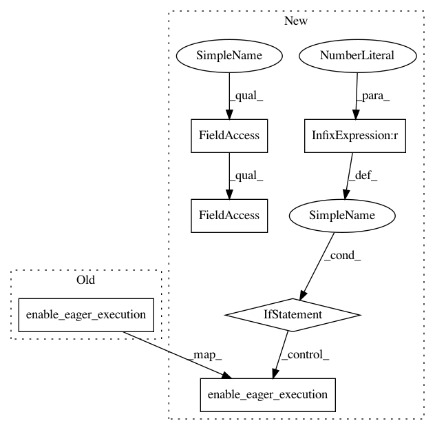

cb112c4dfca92159520bb7b2c8a95a94ab38239c,api-examples/eager-tagger.py,,,#,13
Before Change
import tensorflow as tf
import logging
import numpy as np
tf.enable_eager_execution()
NUM_PREFETCH = 2
SHUF_BUF_SZ = 5000
def get_logging_level(ll):
After Change
TF_VERSION = get_version(tf)
if TF_VERSION < 2:
from tensorflow import count_nonzero
tf.enable_eager_execution()
Optimizer = tf.train.GradientDescentOptimizer
else:
from tensorflow.compat.v1 import count_nonzero
Optimizer = tf.optimizers.SGD
NUM_PREFETCH = 2
SHUF_BUF_SZ = 5000
def get_logging_level(ll):
ll = ll.lower()
In pattern: SUPERPATTERN
Frequency: 3
Non-data size: 6
Instances
Project Name: dpressel/mead-baseline
Commit Name: cb112c4dfca92159520bb7b2c8a95a94ab38239c
Time: 2019-10-17
Author: dpressel@gmail.com
File Name: api-examples/eager-tagger.py
Class Name:
Method Name:
Project Name: CyberZHG/keras-bert
Commit Name: 9c8489722f6f604e5282d633384ca89657f2ad6b
Time: 2019-06-09
Author: 853842+CyberZHG@users.noreply.github.com
File Name: keras_bert/backend.py
Class Name:
Method Name:
Project Name: dpressel/mead-baseline
Commit Name: cb112c4dfca92159520bb7b2c8a95a94ab38239c
Time: 2019-10-17
Author: dpressel@gmail.com
File Name: api-examples/eager-lm.py
Class Name:
Method Name: